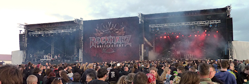

Rock Harz 2012

Im letzten Jahr habe ich noch orakelt, dass das Rock Harz weiter auf Wachstum setzt - und schon ist das Festival dieses Jahr zum ersten Mal ausverkauft. Fast 10000 Besucher bevölkerten von Mittwoch bis zum verkaterten Sonntag Morgen einen erneut gewachsenen Campingground. Wenn diese Expansion so weiter geht, dann müssen in ein paar Jahren die letzten Zelte hinter der Teufelsmauer aufgebaut werden.
Auf dem Festivalgelände selber war von dem Rekordbesucherzahlen zum Glück nicht viel zu sehen. Auch anno 2012 ist es noch möglich, sich bei den Headlinern in die vordersten Reihen zu kämpfen. Allein bei Blind Guardian am Freitag war es mir etwas zu voll; die Band hat mit Abstand die meisten Fans angelockt. Da ich mich nicht dazu zähle, habe ich dankend noch während des Auftritts den Weg zum Zelt angetreten.
Besser gefallen hat mir der Donnerstag. Denn nach einigen Absagen haben es die Emil Bulls tatsächlich zum Rock Harz geschafft. Bereits vor zehn Jahren hat mich die Band auf dem Highfield begeistert, allerdings noch in ihrer Crossover-Phase. Diese haben sie lange hinter sich gelassen, so dass in ihrer 45minütigen Show ausschließlich Lieder der letzten drei Alben gespielt wurden, die zum Glück selten so poppig wie die Single The Jaws Of Oblivion daherkommen.
Oomph! haben sich dagegen seit 2007 nicht weiterentwickelt, so dass ich gleich zu den beiden Headlinern des Freitags komme: Sepultura und Hatebreed haben jeweils solche Bretter auf die Bühne gelegt, dass es die nachfolgenden Tag sehr schwer hatten, dies zu toppen.
Entsprechend war Samstag dann der Tag der Enttäuschungen. Hoch waren meine Erwartungen an den Auftritt von Paradise Lost ohnehin nicht, seit ich sie einmal auf dem Highfield gesehen habe. Doch auch 2012 schienen sie eher uninspiriert. Das Set als Auswahl aus 22 Jahren CD-Veröffentlichungen ließ keinen roten Faden erkennen, und ohne Keyboarder kamen die Synthie-Sequenzen aus der schlecht abgemixten Dose. Zumindest waren auch drei meiner Lieblingssongs dabei, u.a. Fear of Impending Hell, das Highlight des ansonsten durchwachsenen aktuellen Albums. Und der Stil von Nick Holmes, der einmal mehr zu kurzen Haaren zurückgekehrt ist und mit eng geschnittenem Hemd auf die Bühne kam, stand im Kontrast zum Klischee des Gothic-Frontmanns, das er selber die letzten Jahre über bedient hat. Als Stammgast des Rock Harz bin ich im Gegensatz zu ihm aber froh über jede Minute Sonne, die er mit “Fuck off sun” vertreiben wollte, weil sie ihm direkt ins Gesicht schien.
{kind=link}
Nach Paradise Lost kamen nur noch ASP (Gothic in schlecht) und die schon erwähnten Blind Guardian (langweilig), so dass ich gleich zum Samstag übergehe. Dort stand am Nachmittag eine Band mit dem wohlklingend zurückhaltenden Namen Betontod auf der Bühne. Dahinter verbirgt sich eine deutsch singende Punkband, die nach zwanzig Jahren Bandgeschichte den Sprung in die Charts geschafft hat. Mit Songs wie Keine Popsongs und Wir müssen aufhören weniger zu trinken bedienen sie die abwanderungswillige Klientel der Hosen, denen sie auch optisch nahe kommen. Unterhaltsam, aber wenig spannend.
Weiter ging es mit Lacuna Coil, einer Band, die ich schon lange einmal sehen wollte. Die ersten Alben vor Comalies haben für mich den Gothic der 90er Jahre geprägt, danach kam eine Wendung hin zum Alternative Metal bzw Nu Metal, der dann auch den Auftritt auf dem Rock Harz bestimmte. Sängerin Cristina Scabbia ist auf der Bühne - im Gegensatz zu der zierlichen Frontfrau von Deadlock - mit einer unglaublichen Präsenz vertreten, so dass ich es schade finde, dass der aktuelle Stil der Band mehr Wert legt auf den Kontrast ihrer Stimme zu der von Andrea Ferro, als sie in längeren Gesangspassagen zur Geltung zu bringen.
{kind=link}
{kind=link}
Keine Kompromisse gibt es dagegen seit jeher bei Arch Enemy. Angela Gossow grölt sich noch immer die Stimme aus den Hals und zeigt dem Publikum auch gerne ihren Sixpack-Bauch - ich bekomme langsam Angst vor dieser Frau. Gleich danach kam mit Knorkator das Kontrastprogramm, nämlich Stumpen in wie gewohnt sehr kurzer Bekleidung. 2008 hatten sie das Rock Harz noch auf ihrer Abschiedstour besucht, nun sind sie wieder zurück und gut wie eh und je. Stumpen ließ alle Fotografen aus dem Bühnengraben ins Rampenlicht holen und rief Dicke auf die Bühne, damit er auf sie draufspringen konnte. Zudem ist aktuell die Gastgitarristin Jen mit Knorkator unterwegs, die optisch auf jeden Fall eine gute Figur macht und sich in ihrem Latexoutfit an Ketten über die Bühne ziehen lässt.
{kind=link}
Nach diesem intensiven Auftritt war bei mir dann die Luft raus, so dass ich Amon Amarth nicht weiter verfolgt habe. Wer mehr Berichte zu allen Bands lesen möchte, der sei hiermit an Metal4.de verwiesen, von deren Seite auch die von mir verlinkten Bilder stammen. Die Vorjahresartikel gibt es dagegen nur bei mir!